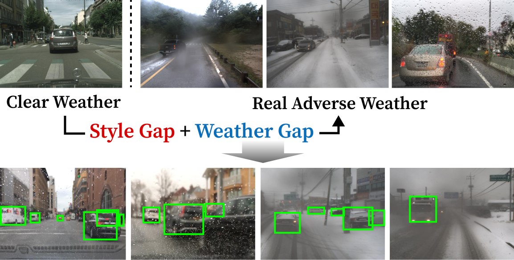
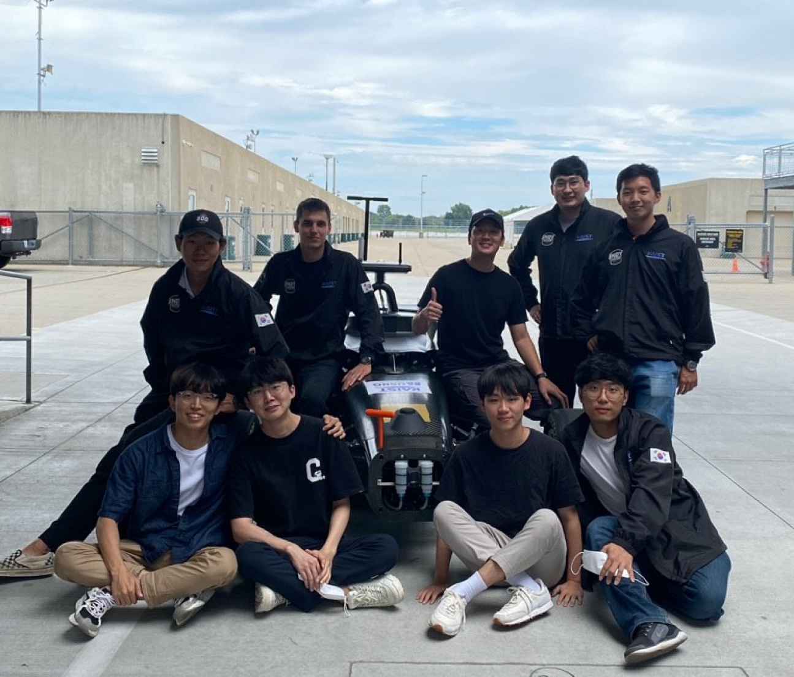
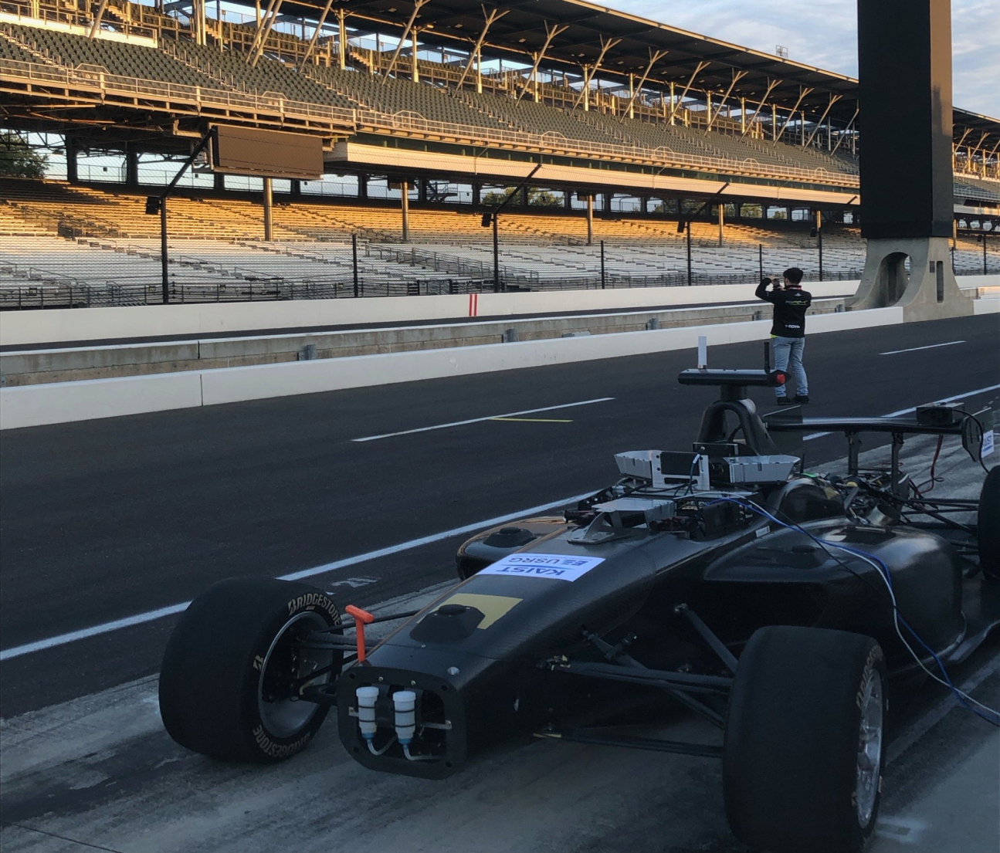

I am a MS in Robotics student at Carnegie Mellon University (CMU).
My research interests lie in computer vision and robotics, with a special focus on their robustness and generalizability.
Prior to joining CMU, I served as a researcher at the Agency for Defense Development (ADD) in the South Korea while concurrently completing my mandatory military service.
I completed my bachelor's degree (Summa Cum Laude) in School of Computing at KAIST (Korea Advanced Institute of Science and Technology).
I am interested in the intersection of robotics and computer vision,
with the goal of developing generalizable robotic perception system that adapts through feedback gathered during operation,
enhancing scalability and reliability in unfamiliar environments over long-term deployments.
I am particularly interested in methods to adapt perception models to novel environments and reduce uncertainties,
mitigate ambiguity through multimodal integration,
and integrate perception with navigation for active data acquisition.
My current & future interests are as follows:
•Korea Advanced Institute of Science and Technology (KAIST), 2018.03-2022.02
●B.S. in Computer Science, Electrical Engineering (Double Major)
●Summa Cum Laude
•Gyeonggi Science High School for Gifted Students, 2015.03-2018.02
Publications
(* denotes Equal Contribution)
Open-World Object Detection with Instance Representation Learning
Sunoh Lee*,
Minsik Jeon*,
Jihong Min,
Junwon Seo Submitted to IEEE/CVF Winter Conference on Applications of Computer Vision (WACV), 2026.
project page
/
video
/
arXiv
A method for Open-World object detection that improves novel object detection and semantically rich feature extraction by leveraging Vision Foundation Models.

DA-RAW: Domain Adaptive Object Detection for Real-World Adverse Weather Conditions Minsik Jeon*,
Junwon Seo*,
Jihong Min
IEEE International Conference on Robotics and Automation (ICRA), 2024.
project page
/
video
/
arXiv
An UDA framework for object detection that can effectively adapt to real-world adverse weather conditions by addressing Style & Weather gaps separately.
Projects
Adaptive Path Planning Based on Situational Awareness and Dynamic Model Learning
Agency for Defense Development, 2023-Present
- Developing perception and control algorithms for off-road navigation:
Robust moving object detection & tracking in off-road environment,
semantic terrain classification map through LiDAR-Camera integration.
- Examined path planning and control algorithms for navigation in complex environments.
Unmanned reconnaissance vehicles development
Agency for Defense Development, 2023
- Developed an LiDAR-IR fusion method for robust object detection under visibility-constrainted scenarios.
Deformable Object Recognition Technology
Agency for Defense Development, 2022-2023
- Developed an open-set 2D & 3D object detection method for LiDAR pointcloud.


Indy Autonomous Challenge (IAC) USRG @ KAIST (Advised by Prof. David Hyunchul Shim), 2021
Participated in the Indy Autonomous Challenge (IAC), the first autonomous car racing competition to be held in Indianapolis, as an intern for Team KAIST.
As part of a perception team, I tested algorithms using camera and lidar in a simulation environment.
Microscopy Image Artifact Removal & Superresolution NICA Lab @ KAIST (Advised by Prof. Young-Gyu Yoon), 2021
Developed a removal network that addresses the line artifact of SCAPE microscopy image, using CycleGAN-like model and transferring the image into a CFM style.
Performance and Operation Analysis of On-Board RAID
SK Hynix, 2020
In Performance analysis team, configured On-board RAID using SSDs and conducted performance evaluations
for each RAID option.
{kind=link}